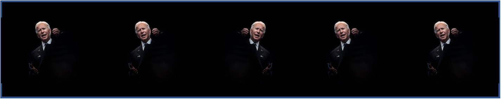

<!DOCTYPE html>
<html>
  <head>
    <title>Flanker Task with Biden</title>
    <script src="https://unpkg.com/jspsych@7.0.0"></script>
    <script src="jspsych/plugin-html-keyboard-response.js"></script>
    <script src="jspsych/plugin-image-keyboard-response.js"></script>
    <script src="jspsych/plugin-preload.js"></script>
    <link href="https://unpkg.com/jspsych@7.0.0/css/jspsych.css" rel="stylesheet" type="text/css" />
  </head>
  <body></body>
  <script>

    var jsPsych = initJsPsych();

    /* experiment parameters */
    var reps_per_trial_type = 4;

    /*set up welcome block*/
    var welcome = {
      type: jsPsychHtmlKeyboardResponse,
      stimulus: "A naturalistic flanker task. Press any key to begin."
    };

    /*set up instructions block*/
    var instructions = {
      type: jsPsychHtmlKeyboardResponse,
      stimulus: "<p>You will see five pictures of Biden, like the example below.</p>"+
        "</img>"+
        "<p>Press the left arrow key if the middle Biden is facing left. (<)</p>"+
        "<p>Press the right arrow key if the middle Biden is facing right. (>)</p>"+
        "<p>Press any key to begin.</p>",
      post_trial_gap: 1000
    };

    /*defining stimuli*/
    var test_stimuli = [
      {
        stimulus: "assets/images/con1.png",
        data: { stim_type: 'congruent', direction: 'left'}
      },
      {
        stimulus: "assets/images/con2.png",
        data: { stim_type: 'congruent', direction: 'right'}
      },
      {
        stimulus: "assets/images/inc1.png",
        data: { stim_type: 'incongruent', direction: 'right'}
      },
      {
        stimulus: "assets/images/inc2.png",
        data: { stim_type: 'incongruent', direction: 'left'}
      }
    ];

    /* defining test timeline */
    var test = {
      timeline: [{
        type: jsPsychImageKeyboardResponse,
        choices: ['ArrowLeft', 'ArrowRight'],
        trial_duration: 1500,
        stimulus: jsPsych.timelineVariable('stimulus'),
        data: jsPsych.timelineVariable('data'),
        on_finish: function(data) {
          var correct = false;
          if (data.direction == 'left' && jsPsych.pluginAPI.compareKeys(data.response, 'ArrowLeft') && data.rt > -1) {
            correct = true;
          } else if (data.direction == 'right' && jsPsych.pluginAPI.compareKeys(data.response, 'ArrowRight') && data.rt > -1) {
            correct = true;
          }
          data.correct = correct;
        },
        post_trial_gap: function() {
            return Math.floor(Math.random() * 1500) + 500;
        }
      }],
      timeline_variables: test_stimuli,
      sample: {type: 'fixed-repetitions', size: reps_per_trial_type}
    };

    /*defining debriefing block*/
    var debrief = {
      type: jsPsychHtmlKeyboardResponse,
      stimulus: function() {
        var total_trials = jsPsych.data.get().filter({trial_type: 'image-keyboard-response'}).count();
        var accuracy = Math.round(jsPsych.data.get().filter({correct: true}).count() / total_trials * 100);
        var congruent_rt = Math.round(jsPsych.data.get().filter({correct: true, stim_type: 'congruent'}).select('rt').mean());
        var incongruent_rt = Math.round(jsPsych.data.get().filter({correct: true, stim_type: 'incongruent'}).select('rt').mean());
        return "<p>You responded correctly on <strong>"+accuracy+"%</strong> of the trials.</p> " +
        "<p>Your average response time for congruent trials was <strong>" + congruent_rt + "ms</strong>.</p>"+
        "<p>Your average response time for incongruent trials was <strong>" + incongruent_rt + "ms</strong>.</p>"+
        "<p>Press any key to complete the experiment. Thank you!</p>";
      }
    };

    // manually preload images due to presenting them with timeline variables
    var images = ["assets/images/con1.png","assets/images/con2.png","assets/images/inc1.png","assets/images/inc2.png"];
    var preload = {
      type: jsPsychPreload,
      images: images
    };

    /*set up experiment structure*/
    var timeline = [];
    timeline.push(preload);
    timeline.push(welcome);
    timeline.push(instructions);
    timeline.push(test);
    timeline.push(debrief);

    /*start experiment*/
    jsPsych.run(timeline);
    
  </script>
</html>
